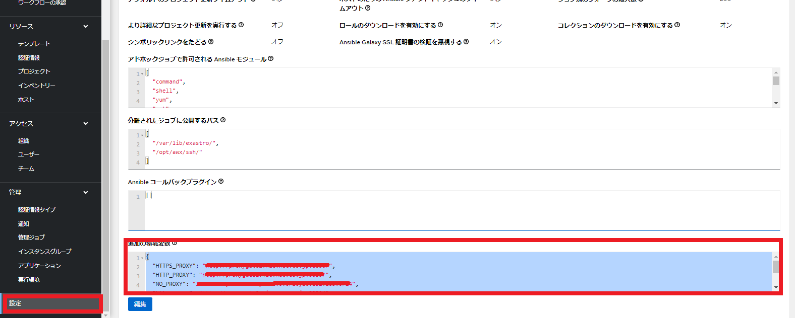

ITA_システム構成/環境構築ガイド
Ansible-driver編
－第1.10版－
Copyright © NEC Corporation 2020. All rights reserved.
免責事項
本書の内容はすべて日本電気株式会社が所有する著作権に保護されています。
本書の内容の一部または全部を無断で転載および複写することは禁止されています。
本書の内容は将来予告なしに変更することがあります。
日本電気株式会社は、本書の技術的もしくは編集上の間違い、欠落について、一切責任を負いません。
日本電気株式会社は、本書の内容に関し、その正確性、有用性、確実性その他いかなる保証もいたしません。
商標
- LinuxはLinus
Torvalds氏の米国およびその他の国における登録商標または商標です。
- Red Hatは、Red Hat,
Inc.の米国およびその他の国における登録商標または商標です。
- Apache、Apache Tomcat、Tomcatは、Apache Software
Foundationの登録商標または商標です。
- Oracle、MySQLは、Oracle Corporation
およびその子会社、関連会社の米国およびその他の国における登録商標です。
MariaDBは、MariaDB Foundationの登録商標または商標です。
Ansibleは、Red Hat, Inc.の登録商標または商標です。
AnsibleTowerは、Red Hat, Inc.の登録商標または商標です。
- Ansible Automation Controllerは、Red Hat,
Inc.の登録商標または商標です。
- Ansible Automation Pratformは、Red Hat,
Inc.の登録商標または商標です。
その他、本書に記載のシステム名、会社名、製品名は、各社の登録商標もしくは商標です。
なお、® マーク、TMマークは本書に明記しておりません。
※本書では「Exastro IT Automation」を「ITA」として記載します。
※「Ansible Tower」はAnsible Automation Pratform2.0以降で「Ansible Automation Controller」に名称が変更になりました。本書での「Ansible Automation Controller」の記載は、「Ansible Tower」も含めた記載となっています。
1. 目次¶
5.4. Ansible Automation Controllerへのファイル転送ユーザーの準備 11
2. はじめに¶
本書では、ITAでAnsibleオプション機能（以下、Ansible driver）として運用する為のシステム構成と環境構築について説明します。
ITA Ansible driverを利用するにあたっては、ITA基本機能が構築済であることが前提です。ITA基本機能の構築に関しては、「システム構成／環境構築ガイド_基本編」をご覧ください。
3. 機能¶
Ansible driverは以下の機能を提供します。
表 1 機能名
No |
機能名 |
用途 |
WEB コン テンツ |
Ba ckyard コン テンツ |
|---|---|---|---|---|
1 |
Ansible driver |
ITAからAnsible Core かAnsible Automation Controller を介してサーバ、ストレージ、ネ ットワーク機器の構成管理を行う |
● |
● |
2 |
Ansible driver (Agent) |
Ansible Core を外部から操作するため のRestAPIを提供するコンテンツ |
● |
－ |
4. システム構成¶
4.1. 2.1 システム構成¶
Ansible driver機能のシステム構成は、ITAシステムと同じです。
Ansible driver（Agent）機能は、Apache、PHP、Ansible Core と構成する必要があります、専用サーバを用意するか、ITAシステムにコンソリデーションすることが可能です。
Ansible Automation Controllerにより、Ansible実行における拡張された機能の利用や、
可用性を高めた構成で運用することが可能です。
ITAシステムおよびAnsible Coreとは個別の専用サーバを用意する必要があります。
また実行するplaybookをAnsible Vaultで暗号化するため、Ansible Core [Ansible Driver (Agent)]が必要となります。 (Backyardサーバとコンソリデーションすることも可能)
Ansible実行の対象機器の接続台数が多く、Ansible実行サーバのスケールアウトが必要な場合、Ansible Automation Controllerによる構成を推奨します。
以下に主なAnsible driver機能利用の構成パターンと構成イメージを記載します。
※ITAシステムは省略した構成図を記載。詳細は「システム構成／環境構築ガイド_基本編」を参照してください。
表 2.1 システム構成パターン
N o |
構成 |
説明 |
Ansible スケール アウト可否 |
|---|---|---|---|
1 |
オ ールインワン構成 |
ITAシステムとAnsible Core [Ansible Driver (Agent)] を同一サーバ上に構成 |
× |
2 |
Ansible Core分離構成 |
ITA システムと個別に構築したAnsible Core [Ansible Driver (Agent)] との連携構成 |
× |
3 |
Ansible Automation Controller構成 |
ITAシステム (Ansible Core/ Ansible Driver (Agent)) と Ansible Automation Controller の連携構成 |
〇 |
システム構成イメージは「システム構成／環境構築ガイド_基本編」の「2.1 システム構成」
を参照してください。

4.2. システムの通信要件¶
本システム構成において、各サービス間の通信要件は以下の通りです。
ITAシステム本体の通信要件の詳細は「システム構成／環境構築ガイド_基本編」を参照してください。
表 2.2通信要件一覧
通 信 番 号※ 1* |
FROM |
TO |
** プロトコル** [ポート番号 ※2]* |
主な用途 |
|---|---|---|---|---|
I TAサーバ (Web /AP機能) |
Ansible Core |
http(s) [ 80(443)/tcp] |
REST APIリクエストを投入する (緊急停止) |
|
I TAサーバ (Backy ard機能) |
Ansible Core |
http(s) [ 80(443)/tcp] |
REST APIリクエストを投入する (処理実行等) |
|
Ansible Core |
ス トレー ジ機器 |
ファ イルアクセス (tcp or ス トレージI/O) |
Ansibleコマ ンド実行時の実行情報(Pla ybook,host_vars等)の参照 |
|
④ |
対 象機器 |
Any (ssh [22/tcp] telnet [23/tcp] 等※3） |
自動構成の 対象機器へのコマンド実行 |
|
⑤ |
I TAサーバ (Web /AP機能) |
Ansible Aut omation Con troller |
http(s) [ 80(443)/tcp] |
REST APIリクエストを投入する (緊急停止) |
⑥ |
I TAサーバ (Backy ard機能) |
http(s) [ 80(443)/tcp] |
REST APIリクエストを投入する (実行データリ ソース作成／処理実行等) |
|
⑦ |
ssh [22/tcp] |
Ansibleコマンド実行 時の実行情報(Playbook,h ost_vars等)をITA作業用デ ィレクトリに転送（scp） |
||
⑧ |
Ansible Au tomation Co ntroller |
IT Aサーバ (Backya rd機能) |
ssh [22/tcp] |
ITAに作成されてい るGitリポジトリをSCM管理 ディレクトリに連携（git clone） |
⑨ |
対 象機器 |
Any (ssh [22/tcp] telnet [23/tcp] 等※3） |
自動構成の 対象機器へのコマンド実行 |
※1「2.1システム構成」の構成イメージに上記番号と紐づく通信番号を記載。
※2 ポート番号は標準的なポート番号を記載。
※3 代表的な例を記載。Ansibleモジュールにより利用プロトコルが異なる。
5. システム要件¶
Ansible driver はITAシステムのシステム要件に準拠するため、「システム構成／環境構築ガイド_基本編」を参照してください。ここではBackyard、Ansible Core、Ansible Automation Controllerの要件を記載します。
●Backyard
表 3-1.Ansible Backｙard必要Linuxコマンド
コマンド |
注意事項 |
|---|---|
zip |
表 3-2.Ansible BackYard必要外部モジュール
外 部ﾓｼﾞｭｰﾙ |
バー ジョン |
注意事項 |
|---|---|---|
php-yaml |
2.1.0 以上 |
●Ansible Core
表 3-3 Ansible Core システム要件
パ ッケージ |
バ ージョン |
注意事項 |
|---|---|---|
Ansible |
2.5 以上 |
|
Python |
3.0 以上 |
|
pywinrm |
Pythonモジ ュールです。Yumでインストールできない場合 、pipを使用してインストールしてください。 |
|
Pexpect |
Pythonモジュールです。 |
|
telnet |
－ |
構成対象にtelnet接続する場合に必要です。 |
Apache |
2.4系 |
ITAシステ ムと異なるサーバで運用の場合に必要です。 パッケージ/バージョ ンはITAシステムサーバに合わせてください。 |
表 3-4 Ansible Driver必要Linuxコマンド
コマンド |
注意事項 |
|---|---|
expect |
●Ansible Automation Controller
表 3-5 Ansible Automation Controllerシステム要件
パッケージ |
バージ ョン* |
注意事項 |
|---|---|---|
Ansible Tower |
3. 5.0以上 |
3.5.0以前 のバージョンでユーザー/パスワード による認証方式には対応できません。 |
Ansible Automation Controller |
4. 0.0以上 |
6. Playbook連携¶
ITAとAnsible Core 及びAnsible Automation Controller間のPlaybook連携について説明します。
図4-1 ITAとAnsible Core間のPlaybook連携図
図4-1 ITAとAnsible Tower3.x間のPlaybook連携図
Ansible Tower3.xではSCMタイプを「手動」で行っていましたが、Ansible Automation Controller4.xではSCMタイプを「手動」にして各データリソース登録と実行を連続して行うと実行時にエラーとなる事象が発生するようになったため、Gitを介してPlaybook一式を連携するSCMタイプ「Git」に変更しています。
図4-3 ITAとAnsible Automation Controller4.x間のPlaybook連携図
7. 初期設定¶
Ansible Core 及びAnsible Automation Controllerインストール後、実行エンジンに応じて各設定を行って下さい。
表 5 実行エンジンに応じた設定一覧
設定項目 |
実 行 エ ン ジ ン |
||
|---|---|---|---|
A nsi ble C ore |
An sible Tow er3.x |
Ansible Aut omation Contro ller4.x |
|
共有ディレクトリの準備 |
〇 |
× |
× |
ITA作業用ディレクトリの準備 |
× |
〇 |
〇 |
ITA作業用ディレクトリの公開 |
× |
× |
〇 |
Ansible Automation Controllerへのファイル転送ユーザーの準備 |
× |
〇 |
〇 |
Ansible Automation Controllerと連携するGitへのユーザーの準備 |
× |
× |
〇 |
パッケージ確認 |
× |
〇 |
× |
必要リソース準備 |
× |
〇 |
〇 |
Proxy設定 |
× |
× |
△ |
〇:必須 ×:不要 △:必要に応じて
7.1. 共有ディレクトリの準備¶
ITAとAnsible Coreからアクセス可能な共有ディレクトリを準備してください。
ITAとAnsible Coreをインストール後、この共有ディレクトリをITAシステムに登録する必要があります。「利用手順マニュアル_Ansible-driver」の「インターフェース情報」を参照し、登録を行ってください。
7.2. ITA作業用ディレクトリの準備¶
Ansible Automation ControllerサーバにITA作業用ディレクトリを作成してください。
クラスタ構成の場合は、構成している全てのサーバにディレクトリを作成して下さい。
ただし、Ansible Automation Controllerのhop nodeにはディレクトリ作成不要です。
表 5.1-1 ITA作業用ディレクトリの作成情報
項目 |
設定値 |
|---|---|
ディレクトリパス |
/var/lib/exastro |
オーナー・グループ |
awx:awx |
パーミッション |
0755 |
7.3. ITA作業用ディレクトリの公開¶
ブラウザよりAnsible Automation Controllerにログインし、「設定」→「ジョブ」→「分離されたジョブに公開するパス」に「/var/lib/exastro/」を設定します。

7.4. Ansible Automation Controllerへのファイル転送ユーザーの準備¶
ITAからAnsible Automation Controllerのプロジェクトを生成する際、Ansible Automation Controllerの下記ディレクトリにPlaybook一式をファイル転送します。ファイル転送するLinuxユーザーを準備して下さい。
・SCM管理ディレクトリ(/var/lib/awx/projects)
※Ansible Tower3.xの場合にLinuxユーザーでPlaybook一式をファイル転送します。
・ITA作業用ディレクトリ(/var/lib/exastro)
Linuxユーザーは、Ansible Automation Controllerインストール時に生成されるawxユーザーにパスワードを設定し使用することを強く推奨します。また、awxユーザー以外のユーザーを用意し使用する場合、SCM管理パス(/var/lib/awx/projects)のパーミッションの変更はRedhatのサポート対象外となりますのでご注意下さい。
準備したLinuxユーザーは、ITAシステムに登録する必要があります。「利用手順マニュアル_Ansible-driver」の「Ansible Automation Controllerホスト一覧」を参照し、登録を行ってください。
7.5. Ansible Automation Controllerと連携するGitへのユーザーの準備¶
ITAからAnsible Automation Controllerのプロジェクトを生成する際のSCMタイプをGitにしています。
連携先のGitリポジトリは、Ansible driverのバックヤード機能がインストールされているホストに作成されます。Ansible Automation Controllerから、このGitリポジトリにssh鍵認証で接続するLinuxユーザーを準備して下さい。準備したLinuxユーザーは、ITAシステムに登録する必要があります。「利用手順マニュアル_Ansible-driver」の「インターフェース情報」の「SCM管理 Git連携先情報」を参照し、登録を行ってください。尚、ITAインストーラを使用してITAインストールまたはV1.10.0以降へのバージョンアップをした場合、Gitリポジトリに接続するLinuxユーザーと鍵ファイルを生成し、「インターフェース情報」の「SCM管理 Git連携先情報」の「ユーザー」、「ssh秘密鍵ファイル」を初期設定しているため、個別に作成は不要です。「ホスト名」にAnsible driverのバックヤード機能がインストールされているホスト名（またはIPアドレス）を設定して下さい。
別のユーザーを使用する場合は、Linuxユーザーと鍵ファイルを生成し「インターフェース情報」の「SCM管理 Git連携先情報」を更新して下さい。
表 5.4-1 ITAインストール時に生成されるssh鍵認証用Linuxユーザー情報
項目 |
項目値 |
|---|---|
ユーザー |
awx |
パスワード |
未設定 |
秘開鍵 |
/home/awx/.ssh/rsa_awx_key |
公密鍵 |
/home/awx/.ssh/rsa_awx_key.pub |
7.6. パッケージ確認¶
Ansible-driverで必要なパッケージがインストールされているかを確認します。
インストールされていない場合は、パッケージのインストールが必要です。
●必要なパッケージ
pexpect
●確認方法
su - awx
source /var/lib/awx/venv/ansible/bin/activate
pip list
deactivate
●インストール方法
su - awx
source /var/lib/awx/venv/ansible/bin/activate
umask 0022
pip install --upgrade pexpect
deactivate
7.7. 必要リソース準備¶
Ansible Automation Controllerに認証アプリケーションをあらかじめ登録しておく必要があります。
表 5.7-1. Ansible Automation Controller 必要リソース一覧
** 種類** |
用途 |
名前 |
説明 |
|---|---|---|---|
アプ リケー ション |
認証 アプリケ ーション |
o_aut h2_access_token |
ITAからAnsible Automation Control lerにRestAPIで接続する場合の 認証用のアプリケーション情報 |
ユ ーザー |
トークン |
ITAからAnsible Automation ControllerにRestAPIで接続 するのに使用する接続トークン |
5.7.1アプリケーション¶
Ansible Automation Controller設定値
名前 ： o_auth2_access_token
組織 ： Default
認証付与タイプ ： リソース所有者のパスワードベース
クライアントタイプ ： 機密
5.7.2ユーザートークン¶
Ansible Automation Controller設定値
APPLICATION ： o_auth2_access_token
SCOPE ： 書き込み
Ansible Automation Controllerのログインに使用するユーザーでログインしておく必要があります。
生成されたトークンは、Ansible共通コンソールのインタフェース情報の接続トークンに設定する必要があります。「利用手順マニュアル_Ansible-driver」の「インタフェース情報」を参照し、登録を行ってください。
7.8. Proxyの設定¶
Ansible Automation Controllerの設定に応じて作業実行時などにRedhat社の所定のサイトより実行環境のコンテナイメージのダウンロードが行われます。
Ansible Automation ControllerがProxy環境下にある場合、Ansible Automation ControllerにProxy設定が必要です。Proxyの設定がされていない状態で作業実行を行った場合、エラー原因が取得できない場合があります。
ブラウザよりAnsible Automation Controllerにログインし、「設定」→「ジョブ」→「追加の環境変数」に下記の環境変数を設定します。https_proxyhttp_proxy
no_proxy
HTTPS_PROXY
HTTP_PROXY
NO_PROXY

{kind=link}